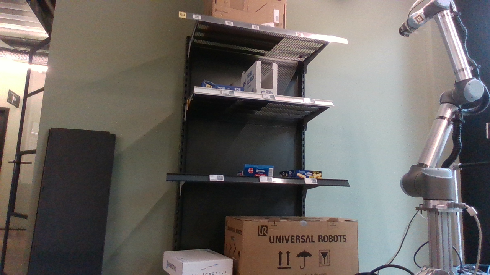
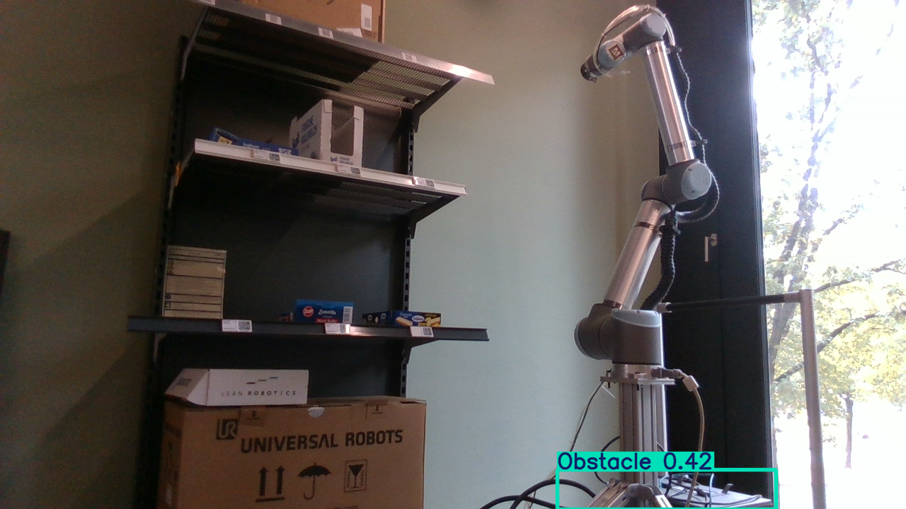
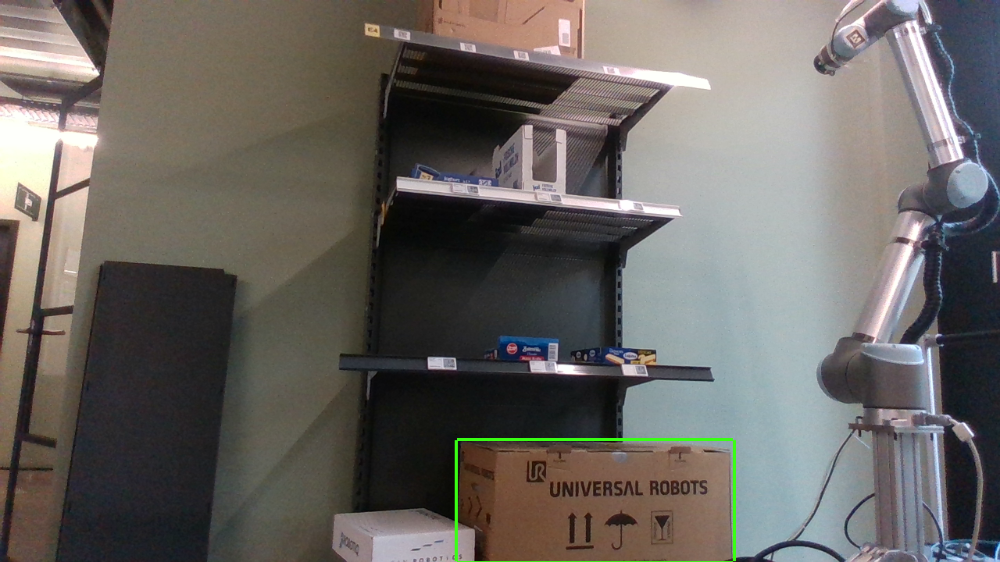

Captured today through the real pipeline — camera on the host, detection in the
shelfbot_ros container, ROS domain 42. This is the actual cell the placement
below has to serve.


Obstacle (0.42) at the pedestal base and correctly ignores the cardboard
boxes. No tray was in view yet.
Detection quality is already usable; what limits the system now is geometry — a loose camera has no trustworthy world pose, so detections cannot become pick targets. Fixing the cameras (this page) plus one scripted calibration turns the feed from "video with boxes" into a measurement rig.
The sim mission already defines three camera jobs with exact topic contracts. Your top / side / wrist instinct maps onto them one-to-one — with two geometry corrections that the sim analysis says matter.
| Unit | D435 #1 (static) |
| Feeds | tray detection (/camera/*) + collision world (nvblox → cuRobo) |
| Position | high front-left ≈ (−0.70, −0.25, 2.2) |
| Attitude | pitched ~50° down at the desks — a shallow side view lets desk B occlude the arm base (sim-verified) |
| Must see | desk A + desk B tops + the arm |
| Unit | D435 #2 (static) |
| Feeds | place targets (/perception/shelf_bays) from board front edges |
| Position | high in front of the shelf ≈ (0.30, −0.90, 2.6) |
| Attitude | ~57° pitch, near-frontal (~15° off shelf normal) — oblique or straight-down views biased bays ~10 cm in sim |
| Must see | all four board front edges |
| Unit | D435i (IMU belongs on the moving link) |
| Feeds | per-bay close-up, pick/place verification, future grasp refinement |
| Mount | bracket designed into the gripper CAD → URDF + collision model regenerate knowing it exists |
| Standoff | surveys at 0.3–0.8 m; <0.2 m is depth-blind, final approach rides kinematics |
| Cable | 5 m active USB 3, service loops at elbow + base |
Top view, cell world frame (metres, arm base defines the frame). Camera spots are starting zones (±15 cm is fine) — calibration measures the truth afterwards. Keep every pole shaft outside the 1.3 m reach circle.
Decision to make: how each camera attaches. Everything sits on quick-release plates + ball heads (RealSense's native 1/4-20), so cameras detach in seconds and the cheap anchor hardware simply stays behind — or travels — when the application moves.
| Mount | Used for | Rigidity | Drilling | Portability | Collision risk | Notes |
|---|---|---|---|---|---|---|
| Floor–ceiling tension pole (Autopole style) |
MAIN now; SHELF if drilling is banned | high (tensioned) | none | excellent — unclamp & move | low — shaft placed outside reach; stand it ~(−0.9, −0.1), lean the head in | The plan's earlier "no tripods" ruling was about a tripod inside the reach sphere; a tensioned pole outside it is a different animal. |
| Single ceiling anchor | SHELF (preferred) | highest | one hole | anchor stays behind (cheap); camera + head pop off | none at z 2.6 | Frontal-steep view it needs is hard to reach any other rigid way. |
| CAD bracket on gripper | WRIST | rigid, known to planner | none (printed part) | travels with the robot; extrinsics via kinematics | modeled — collision spheres regenerate | Interim printed clamp is bench-test only (planner wouldn't know it exists). |
| Robot-frame mast (future, mobile platform) |
all statics, later | good if short; tall mast shakes with arm motion | none | the prize: base-relative poses — calibrate once, redeploy free | mast must join the arm's collision model (same toolchain as the gripper bracket) | Right long-term call. Gate measurements on arm-stationary moments, or accept jitter in the collision map. |
| Clamp to the shelf itself | — | ok | none | easy | low | Rejected: the camera would move with the thing it measures — a shelf bump silently poisons every anchor. |
The cost of relocating is not re-attaching hardware — it's re-measuring camera poses. Portability is therefore mostly a software property:
ChArUco board on the flange, ~15 arm poses per static camera, solve world→camera, write static transforms to config. Redeploying = clamp cameras, run one script.
One AprilTag glued in the scene; its position is checked against the calibration baseline, so a bumped camera announces itself instead of silently skewing picks.
Camera transforms live in launch arguments / rig config (already true of today's bring-up launch) — new site, new numbers, zero code.
QR plate per camera, labeled cables both ends, serials pinned in config. The wrist camera already banks the base-relative benefit today.
tray_perception) verified on GPU.